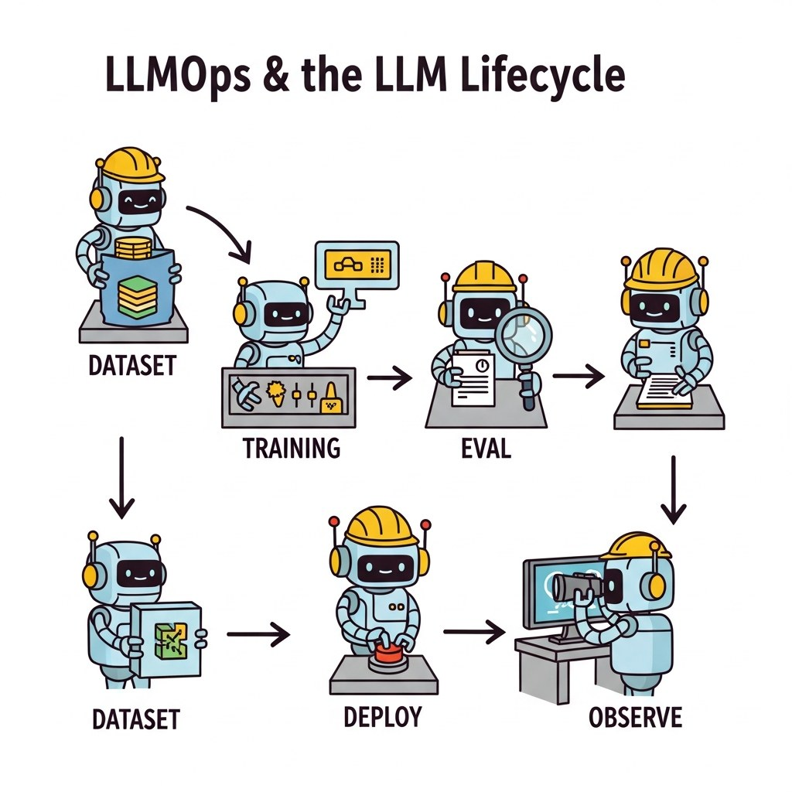

Part Overview
AI gateways and routing, workflow orchestration, containers, reliability and SLOs, model registry and lifecycle.
Big Picture
AI gateways and routing, workflow orchestration, containers, reliability and SLOs, model registry and lifecycle.
Chapters
Chapter 65 Containers, Kubernetes & Deployment
- 65.1 Docker Fundamentals: Images, Containers, and Volumes
- 65.2 Writing Dockerfiles for ML and LLM Projects
- 65.3 Docker Compose for Multi-Service AI Applications
- 65.4 Containerizing LLM Inference Servers
- 65.5 Kubernetes-Native LLM Operations: Scheduling, Serving, and GPU Management
- 65.5a Autoscaling, Networking & Storage for K8s LLMs
What's Next?
This part begins with Chapter 62: Production Engineering for LLM Systems. Each chapter builds on the previous one, so we recommend reading Part XIII in order.